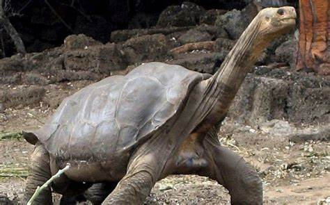

The giant panda (Ailuropoda melanoleuca), also known as the panda bear or simply panda, is a bear species endemic to China. It is characterised by its white coat with black patches around the eyes, ears, legs and shoulders. Its body is rotund; adult individuals weigh 100 to 115 kg (220 to 254 lb) and are typically 1.2 to 1.9 m (3 ft 11 in to 6 ft 3 in) long. It is sexually dimorphic, with males being typically 10 to 20% larger than females. A thumb is visible on its forepaw, which helps in holding bamboo in place for feeding. It has large molar teeth and expanded temporal fossa to meet its dietary requirements. It can digest starch and is mostly herbivorous with a diet consisting almost entirely of bamboo and bamboo shoots.
leopards
The leopard (Panthera pardus) is one of the five extant species in the genus Panthera. It has a pale yellowish to dark golden fur with dark spots grouped in rosettes. Its body is slender and muscular reaching a length of 92–183 cm (36–72 in) with a 66–102 cm (26–40 in) long tail and a shoulder height of 60–70 cm (24–28 in). Males typically weigh 30.9–72 kg (68–159 lb), and females 20.5–43 kg (45–95 lb).
The leopard was first described in 1758, and several subspecies were proposed in the 19th and 20th centuries. Today, eight subspecies are recognised in its wide range in Africa and Asia. It initially evolved in Africa during the Early Pleistocene, before migrating into Eurasia around the Early–Middle Pleistocene transition. Leopards were formerly present across Europe, but became extinct in the region at around the end of the Late Pleistocene-early Holocene.
The leopard is adapted to a variety of habitats ranging from rainforest to steppe, including arid and montane areas. It is an opportunistic predator, hunting mostly ungulates and primates. It relies on its spotted pattern for camouflage as it stalks and ambushes its prey, which it sometimes drags up a tree. It is a solitary animal outside the mating season and when raising cubs. Females usually give birth to a litter of 2–4 cubs once in 15–24 months. Both male and female leopards typically reach sexual maturity at the age 2–2.5 years.
Listed as Vulnerable on the IUCN Red List, leopard populations are currently threatened by habitat loss and fragmentation, and are declining in large parts of the global range. Leopards have had cultural roles in Ancient Greece, West Africa and modern Western culture. Leopard skins are popular in fashion.
Pinta Island tortoises

conservation
Lonesome George
Possible remaining individuals
See also
References
External links
Pinta Island tortoise
Article
Talk
Read
Edit
View history
Tools
Appearance hide
Text
Small
Standard
Large
Width
Standard
Wide
Color (beta)
Automatic
Light
Dark
From Wikipedia, the free encyclopedia
This article is missing information about full genome sequenced. Please expand the article to include this information. Further details may exist on the talk page. (December 2020)
Pinta Island tortoise
Lonesome George at the Charles Darwin Research Station in 2006, the last known individual of his species of Galápagos tortoise
Conservation status
Extinct (2012) (IUCN 3.1)[1]
Scientific classificationEdit this classification
Domain: Eukaryota
Kingdom: Animalia
Phylum: Chordata
Class: Reptilia
Order: Testudines
Suborder: Cryptodira
Superfamily: Testudinoidea
Family: Testudinidae
Genus: Chelonoidis
Species: C. niger
Subspecies: †C. n. abingdonii
Trinomial name
†Chelonoidis niger abingdonii
(Günther, 1877)[2]
Map of the Galápagos Islands showing locations of different tortoise species.
Synonyms[3]
Testudo abingdonii Günther, 1877
Testudo elephantopus abingdonii Mertens & Wermuth, 1955
Geochelone elephantopus abingdonii Pritchard, 1967
Geochelone nigra abingdonii Iverson, 1992
Geochelone abingdonii Valverde, 2004
The Pinta Island tortoise[4] (Chelonoidis niger abingdonii[2][5]), also known as the Pinta giant tortoise,[2] Abingdon Island tortoise,[1] or Abingdon Island giant tortoise,[2] is a recently extinct subspecies of Galápagos tortoise native to Ecuador's Pinta Island.[1]
The subspecies was described by Albert Günther in 1877 after specimens arrived in London. By the end of the 19th century, most of the Pinta Island tortoises had been wiped out due to hunting.[6] By the mid-20th century, the subspecies was assumed to be extinct[7] until a single male was discovered on the island in 1971. Efforts were made to mate the male, named Lonesome George, with other subspecies, but no viable eggs resulted. Lonesome George died on 24 June 2012, and the subspecies was believed to have become extinct with his death.[8] However, 17 first-generation hybrids were reported in 2012 from Wolf Volcano on Isabela Island during a trip by Yale University researchers. As these specimens were juveniles, their parents might still be alive.[9][10] The subspecies is classified as extinct on the IUCN Red List.[1]
why should we help dangerd animals?
Biodiversity: Each species plays a unique role in its ecosystem. When a species goes extinct, it can disrupt the balance of the ecosystem, leading to unforeseen consequences for other species, including humans1.
Environmental Indicators: Endangered species often serve as indicators of environmental health. Their decline can signal broader environmental issues, such as pollution or climate change, that need to be addressed1.
Human Benefits: Many species provide direct benefits to humans, such as medicinal resources. For example, certain plants and animals have been used to develop life-saving drugs2.
do you agree or disagree?
“Humans have a moral obligation to prevent the extinction of other species.”
“The extinction of certain species is a natural part of evolution and should not be interfered with.”
“Conservation efforts for endangered species should be prioritized over economic development.”

.jpeg)